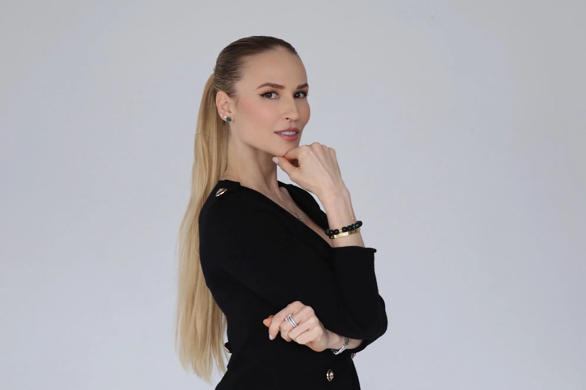
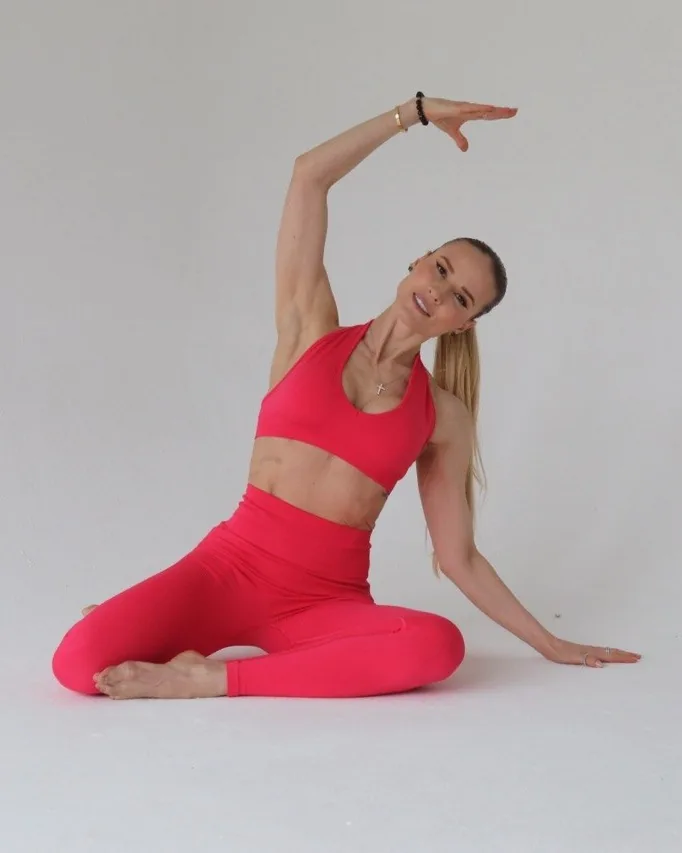
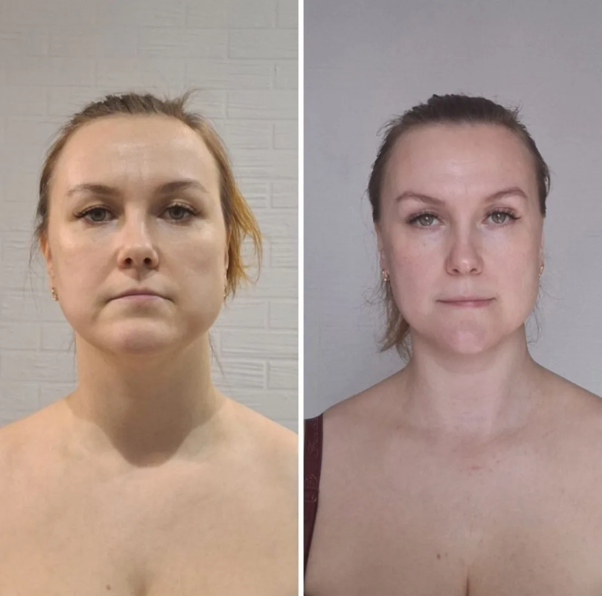
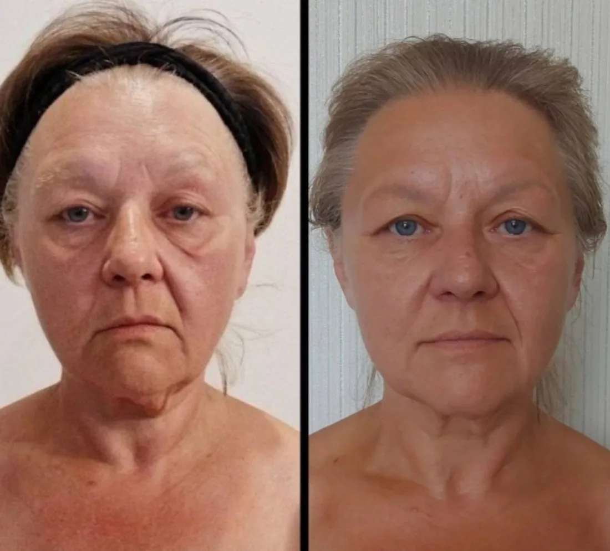
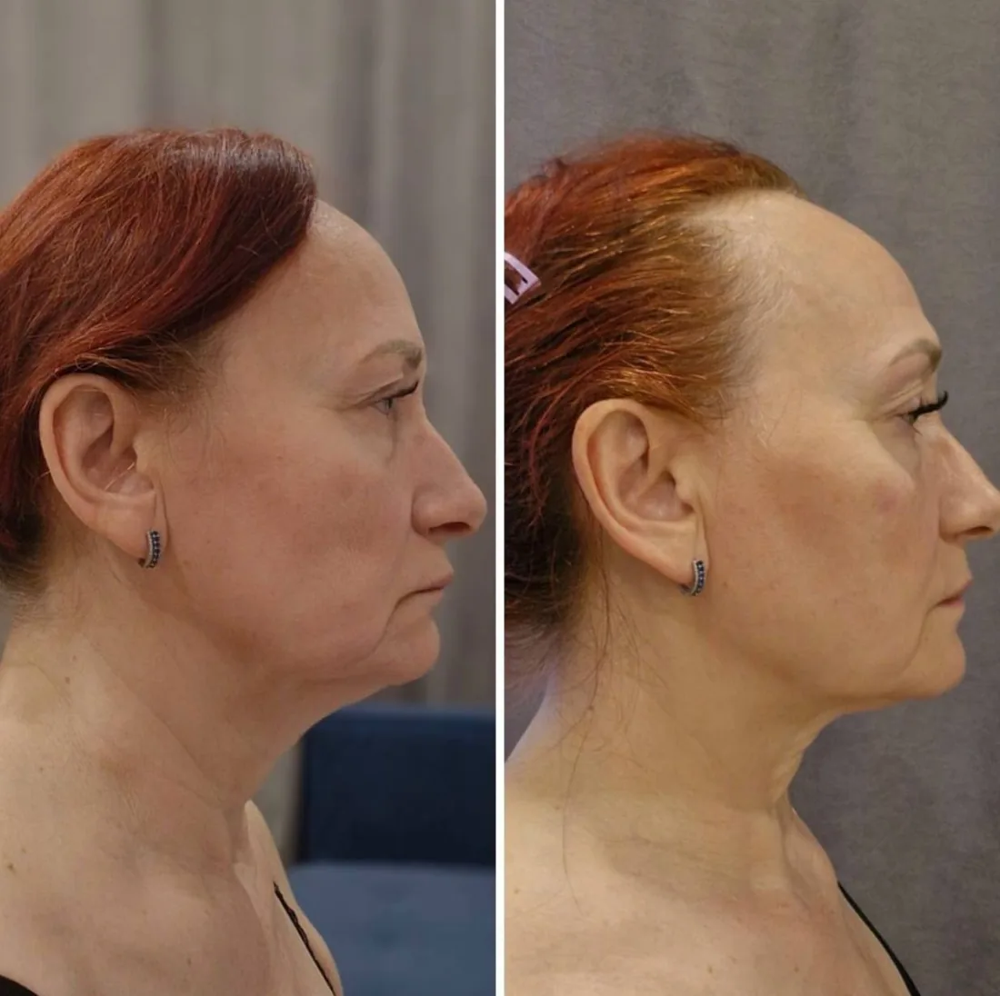
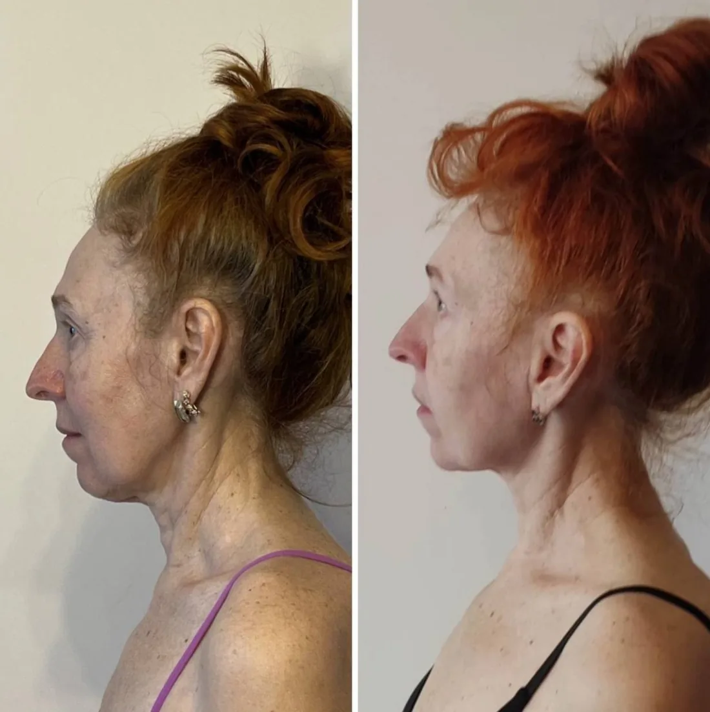
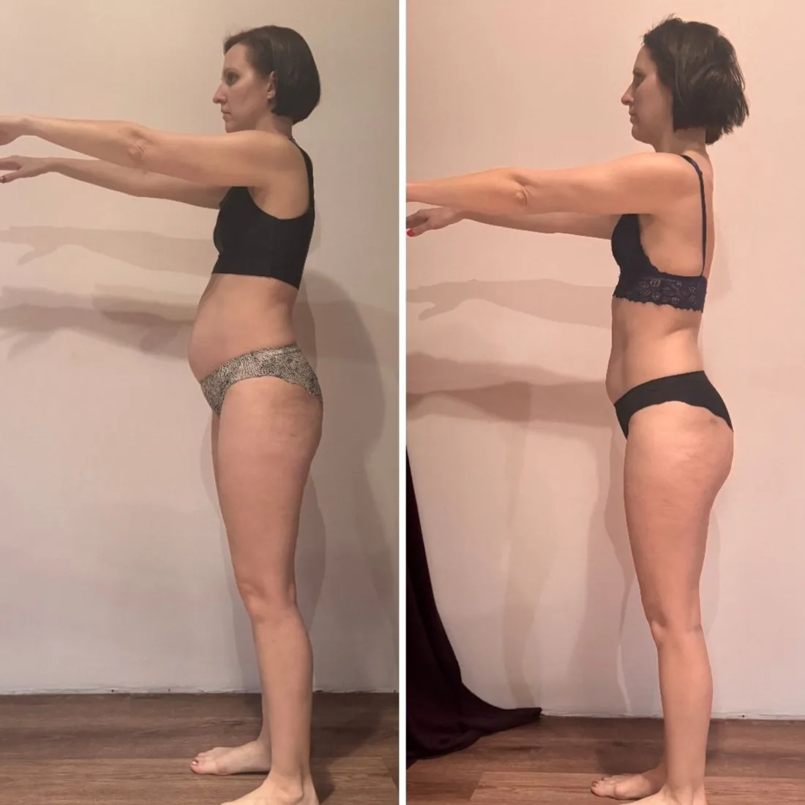
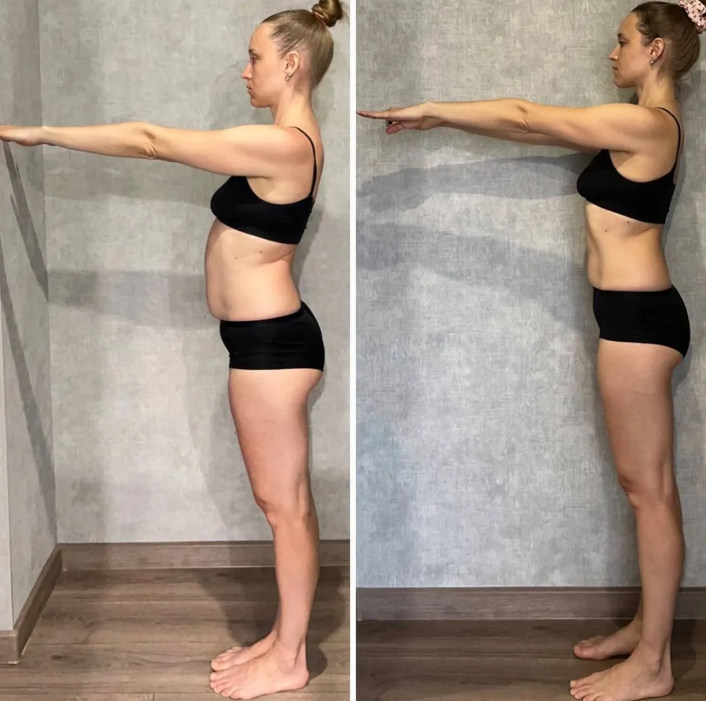
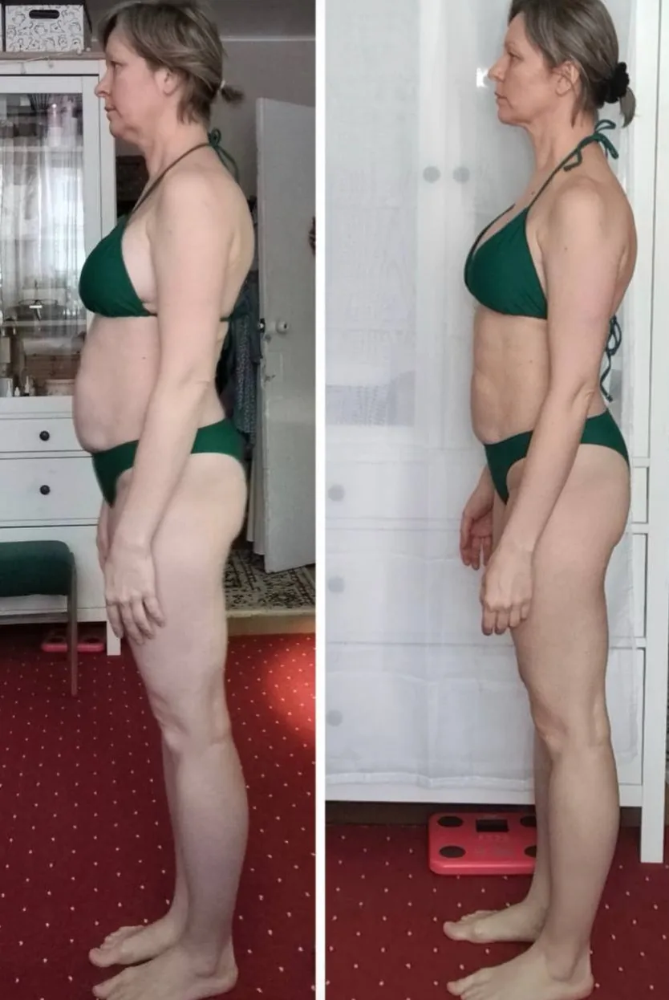

Персональная консультация
60 минут в Zoom: разбор возрастных изменений лица и осанки, запись встречи и заключение с рекомендациями в PDF
50 000 ₽около 600 $
Записаться на консультацию →
Естественное омоложение лица и тела
Авторская диагностика и персональный план — бережная работа с лицом и телом в ритме вашей жизни
Ирина Довгалева
Мастер Естественного Омоложения
Кому подойдёт
Заметили перемены или думаете наперёд, с косметологом или без — программа строится индивидуально под вас
лицо будто резко постарело, поплыл овал
хочется знать свои зоны риска и отсрочить старение заранее
процедуры есть, но чувствуете, что чего-то не хватает
без уколов и пластики, только ресурсы собственного тела
лицо, осанка, питание и привычки вместе, а не по отдельности
Форматы работы
Глубокий личный разбор или ежедневная практика в клубе. Можно начать с любого
60 минут в Zoom: разбор возрастных изменений лица и осанки, запись встречи и заключение с рекомендациями в PDF
50 000 ₽около 600 $
Записаться на консультацию →четыре недели видеозанятий шесть дней в неделю: лицо, осанка, тело и проблемная зона месяца
4 900 ₽около 60 $
Вступить в клуб →Доллары по курсу ЦБ 84,34 ₽ на 26.09.2026

Обо мне
Ирина Довгалева · мастер естественного омоложения
Курс гимнастики для лица когда-то ничего не изменил в моём лице и заставил искать дальше. Я поняла: лицо — это итог осанки, питания, мимики и того, что мы чувствуем.
Поэтому я смотрю на всё сразу: как вы держите спину, сбалансировано ли питание (без жёстких запретов), какие у вас мимические привычки и в каком состоянии вы живёте. Среди моих образований — университет имени П. Ф. Лесгафта, Институт косметологии «Дом Русской Косметики» и Педагогический колледж фитнеса.







Фото опубликованы с письменного согласия учениц
Отзывы
Огромное Вам спасибо делаете большое полезное и доброе, не только о красоте, а о здоровье, с значит о счастье
Доброго дня всем. А у меня тоже болело плечо и ключица левые, не могла поднять руку. Болело на протяжении лет двух наверное. Но после занятий у Ирины , примерно через пол года занятий, боль стала уходить. Сначала боль была утром после сна, делала упражнения на поднятие и опускание плеч и боль уходила. А теперь совсем ничего не болит.
Занимаемся💪🏽 на живот прям огонь! Хорошо чувствую как мышцы работают! Сразу такой подтянутый становится и с каждым днём лучше😉 на шею и подбородок пока не понимаю💁🏻♀️ но надеюсь в конце челленджа увижу результат на фото До и После☺️
Благодарю вас @Dovgaleva_Irina_VladislavovnA что вы тут на связи и так развернуто отвечаете на наши вопросы👍
С Diva уже пятый год 🥰
Недавно дошли слухи, говорят будто я вся обкололась и лоб и скулы 😀считаю, это победа! Мамы знакомых девчонок дают мне 27лет максимум) мне через четыре месяца 35 исполнится))
Обожаю всем сердцем и благодарю занятия с Ириной! Неповторимая! ❤️
Вопросы